1シェファミとは
シェファミは、同じ家で暮らす人どうしで「世帯グループ」を作り、毎日の生活に関わる情報を共有するアプリです。スマートフォンでもパソコンでも、ブラウザから同じように使えます。
できること
| 機能 | 内容 |
|---|---|
| ホーム | カレンダーと、今日の献立・買い物・お金の状況をひと目で確認します。 |
| 献立表・レシピ | レシピを登録し、週ごとに「作りたい料理」を並べます。Webのレシピや手書きレシピの写真からも登録できます。 |
| 在庫・買い物リスト | 食品や日用品の残りを記録します。少なくなった品目は自動で買い物リストに入ります。 |
| 家計簿 | 収入と支出を記録し、月ごとの集計を確認します。口座やカードの残高も管理できます。 |
| 固定費 | 家賃や通信費など毎月の支払いを登録すると、支払日に自動で支出として記録されます。 |
| 割り勘・精算 | 立て替えた支出を相手と分け、請求から受け取りまでの状況を管理します。 |
| イベント | 予定や記念日を登録し、イベントごとの支出も集計します。 |
世帯で共有されるもの・自分だけに見えるもの
お金に関する細かい情報は、登録した本人にだけ表示されます。安心して使えるよう、最初に確認しておいてください。
| 見える範囲 | 対象 |
|---|---|
| 世帯の全員 | 在庫、買い物リスト、レシピ、献立表、公開範囲が「世帯共有」のイベントと固定費、カテゴリー、買う店、世帯のメンバー名 |
| 自分だけ | 収入と支出の明細、口座・カードと残高、公開範囲が「個人」のイベントと固定費、ホームの表示設定 |
| 当事者の2人だけ | 割り勘の内訳とコメント（立て替えた人と、負担する人） |
| 合計金額だけ世帯で共有 | 「世帯合計に含める」を選んだ支出と固定費の合計（世帯合計対象額）。明細は共有されません。 |
利用できる環境
- スマートフォン：iPhone の Safari、Android の Chrome
- パソコン：Chrome、Edge、Safari などの新しいブラウザ
- インターネットに接続した状態で使います。
2はじめかた
2-1. アカウントを登録する
- ログイン画面の新規登録はこちらを押します。
- メールアドレス、パスワード、パスワード（確認）、表示名を入力します。
- 登録するを押します。登録が済むと、そのまま世帯グループの画面へ進みます。
- パスワードは8文字以上で、英字と数字の両方を含めます。
- 表示名は50文字までです。世帯のメンバーに表示される名前なので、家族に分かる名前にしてください。
- パスワード欄の右にある目のボタンで、入力した文字を表示して確かめられます。

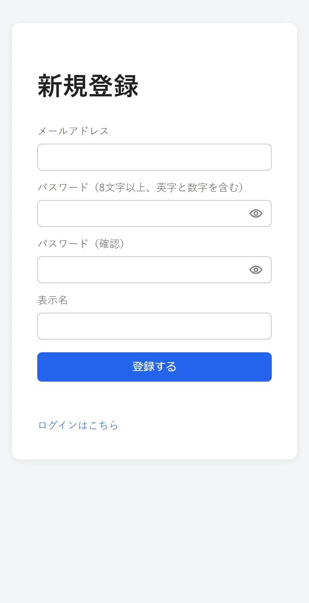
2-2. ログイン・ログアウト
ログイン：メールアドレスとパスワードを入力してログインを押します。
ログアウト：画面右上の自分の名前のボタンを押し、ログアウトを選びます。共用のパソコンで使ったあとは、必ずログアウトしてください。
パスワードを忘れたとき：ログイン画面のパスワードを忘れた場合から手続きします。詳しくは「困ったときは」をご覧ください。

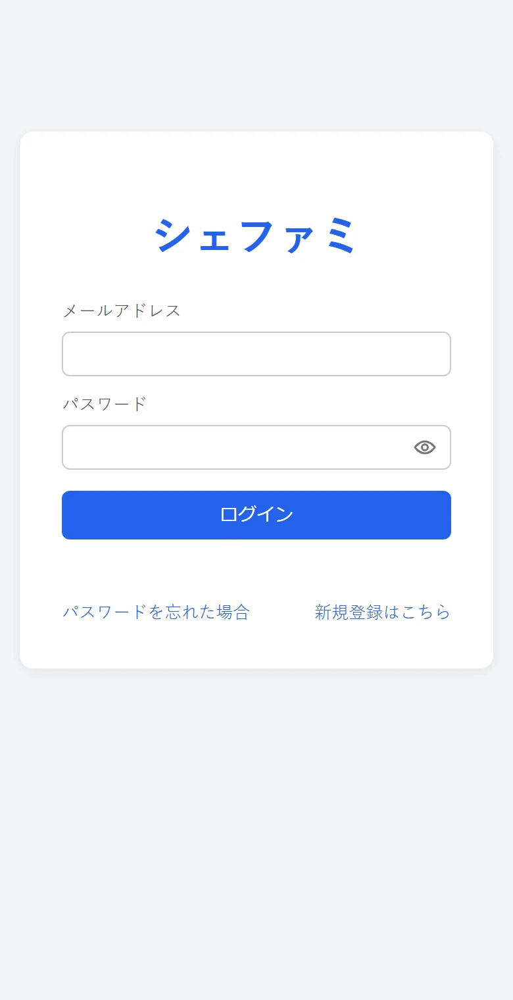
2-3. 世帯グループを作る・参加する
はじめてログインすると、世帯グループの画面が表示されます。世帯グループに入ると、すべての機能が使えるようになります。1人が入れる世帯グループは1つです。
最初の1人：世帯グループを作る
- 「新規作成」の欄に世帯グループ名（例：「サンプル家」）を入力します。
- 作成するを押します。
- 家族を招待するときは、世帯設定に表示される「招待コード」を伝えます。
2人目以降：招待コードで参加する
- 先にアカウントを登録してログインします。
- 「既存に参加」の欄に、教えてもらった招待コードを入力します。
- 参加するを押します。

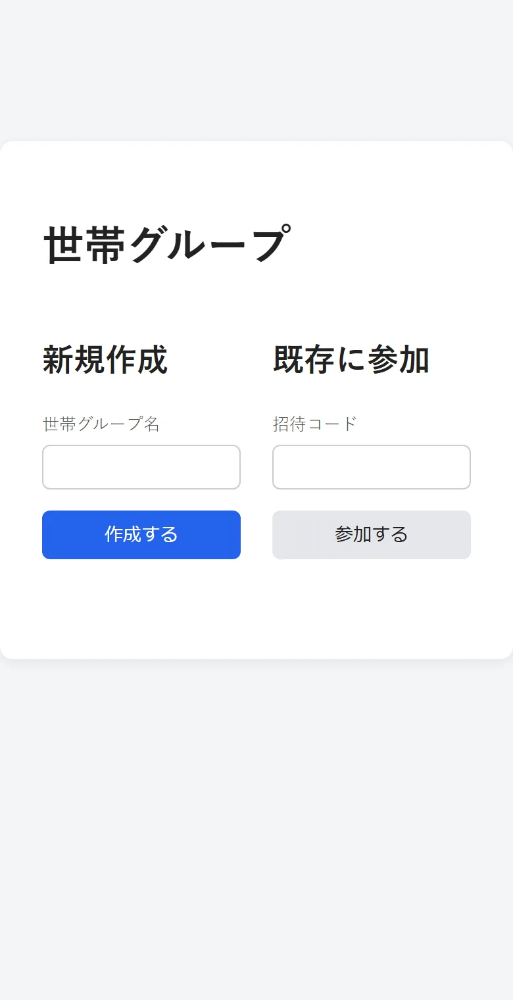
2-4. スマートフォンのホーム画面に追加する
ホーム画面に追加しておくと、アプリのようにアイコンから開けます。
| 端末 | 手順 |
|---|---|
| iPhone（Safari） | シェファミを開く → 画面下の共有ボタン（四角から矢印が出ている形）→「ホーム画面に追加」 |
| Android（Chrome） | シェファミを開く → 右上のメニュー（︙）→「ホーム画面に追加」または「アプリをインストール」→ 表示された画面で「インストール」を選びます。 共有メニューからレシピを登録するには、この「インストール」が必要です。 |
3画面の見方
上のバー
- シェファミ（左上）：押すとホームへ戻ります。
- ベル：今日の通知の件数を表示します。通知を「する」にした繰り返しイベントが今日ある場合に、数字が付きます。
- 歯車：設定を開きます。
- 自分の名前：アカウント設定とログアウトを選べます。
下のメニュー
画面の下に、いつでも押せる5つのボタンがあります。
| ホーム | カレンダーと今日の状況 |
|---|---|
| 献立 | 献立表とレシピ |
| 在庫 | 在庫一覧と買い物リスト |
| 家計簿 | 収支、割り勘、口座・カード、イベント |
| その他 | 表示設定、世帯設定、カテゴリー管理、固定費などへの入口 |
画面上部のタブ
献立・在庫・家計簿の画面では、上のバーのすぐ下にタブが並びます（例：「献立表／レシピ」「在庫一覧／買い物リスト」）。関連する画面へすぐ移動できます。
入力画面の閉じ方
登録や詳細の画面は、キャンセル閉じる×のいずれかで閉じます。パソコンでは Esc キーでも閉じられます。

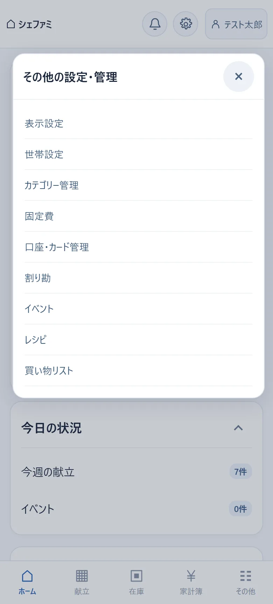

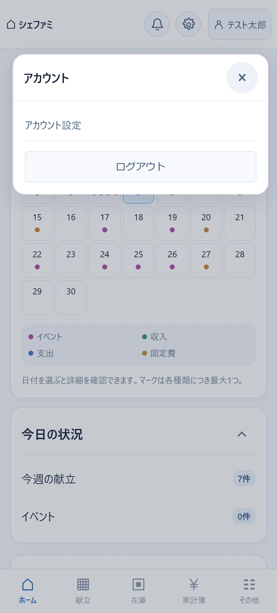
4ホーム
ログインして最初に表示される画面です。上にカレンダー、その下に状況をまとめたカードが並びます。
カレンダー
- 日付の下の点は、その日に登録があることを示します。色は「イベント」「収入」「支出」「固定費」の4種類で、カレンダーの下に見本があります。
- 前月翌月で月を切り替えます。
- 日付を押すと、その日の詳細が開きます。
日付の詳細
「今週の献立」「イベント」「収支」「固定費」の4つの行が表示されます。行を押すと中身が開き、名前や金額を確認できます。献立のレシピ名を押すと、材料と手順も見られます。
カード
| カード | 表示される内容 |
|---|---|
| 今日の状況 | 今週の献立と今日のイベントの件数。行を押すと今日の詳細が開きます。 |
| 買い物・在庫 | 買い物リスト（品名・値段）と在庫（品名・残り）。少なくなった在庫には「不足」と表示されます。 |
| 個人の財政 | 自分の口座の残高の合計。自分にだけ表示されます。 |
| 今月のお金 | 今月の自分の支出、世帯合計対象額、割り勘の受取予定・支払予定。 |
| イベント別支出 | イベントごとの支出の合計。期間（今日・今月・今年）を選べます。 |
- カードの見出しの右にあるボタン（例：買い物リスト ›）で、それぞれの管理画面へ移動します。
- 見出しの右端の ∧ を押すと、カードを折りたためます。折りたたんだ状態は、お使いの端末ごとに記憶されます。
- 表示するカードや並び順は、表示設定で変えられます。

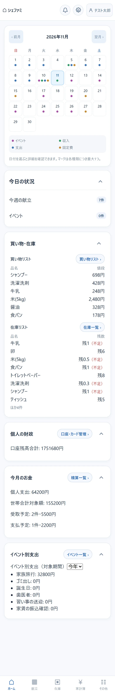

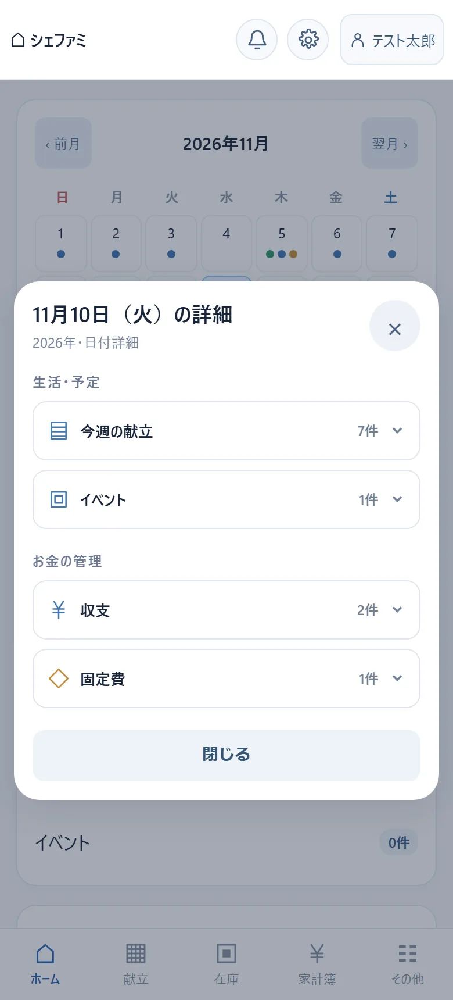


6レシピ
献立の画面の上にあるレシピタブから開きます。登録したレシピは世帯の全員が見て、編集・削除できます。
レシピを見る・お気に入りにする
- タイトルを押すと、材料と手順が表示されます。
- 右の星を押すと、お気に入りに登録・解除できます。
- すべてお気に入りで、表示するレシピを切り替えます。
- 詳細の編集で内容を直し、削除でレシピを消せます。
レシピを登録する（3つの方法）
＋ レシピを登録を押し、上のタブで方法を選びます。
手動
タイトル（100文字まで）、材料、手順を入力して登録を押します。材料と手順は、1行に1つずつ書くと読みやすく表示されます。
画像解析（手書きレシピの写真から）
- 画像解析タブを選び、レシピの写真を選びます（JPEG・PNG・WebP形式、5MBまで）。
- 写真から読み取ったタイトル・材料・手順が入力欄に入ります。
- 内容を確かめ、読み間違いを直してから登録を押します。
画像解析を使えるのは、1人あたり1日20回までです。上限に達したときは、時間をおくか、「手動」で入力してください。
WEB（インターネットのレシピを保存）
- WEBタブを選び、レシピのページのURLを貼り付けます。
- 必要ならメモ（255文字まで）を書きます。
- 登録を押すと、ページのタイトルと画像が自動で取り込まれます。
WEBのレシピは、材料や手順を写し取らず、元のページへのリンクとして保存します。同じURLは1つの世帯に1回だけ登録できます。登録後に直せるのはメモだけです。
レシピのページから直接登録する
レシピ一覧の下の「ほかの登録方法」に、案内があります。
- パソコン：ブックマークから登録
- ブラウザのブックマークバーを表示し、シェファミに登録のボタンをブックマークバーへドラッグして置きます。レシピのページを見ているときにそのブックマークを押すと、URLが入った登録画面が別のタブで開きます。
- iPhone：共有メニューから登録
- ショートカットを追加するから案内のページを開き、ショートカットを追加します。その後は、Safari やアプリの共有メニューで「シェファミに登録」を選ぶと、URLが入った登録画面が開きます。
- Android：共有メニューから登録
- Chrome でシェファミをインストールしてあると、ブラウザやアプリの共有メニューに「シェファミ」が表示されます。選ぶと、URLが入った登録画面が開きます。アプリによってはURLが文章といっしょに送られますが、その場合も文章の中のURLが入ります。共有メニューに表示されないときは、インストールし直してから、もう一度お試しください。
どの方法でも、開いた画面で内容を確かめて登録を押すまでは保存されません。うまく開かないページでは、WEBタブにURLを貼り付けてください。


7在庫
下のメニューの在庫から開きます。食品や日用品の「いま家にある数」を記録します。世帯の全員が見て、変更できます。
在庫を登録する
- ＋ 在庫を登録を押します。
- 下の表の項目を入力します。
- 保存を押します。
| 項目 | 説明 |
|---|---|
| 品名 | 50文字まで。同じ品名は重ねて登録できません。 |
| カテゴリー | 一覧から選びます。＋カテゴリーを登録でその場で追加できます。 |
| 買う店（任意） | いつも買う店を選びます。＋店を登録で追加できます。買い物リストが店ごとにまとまります。 |
| 在庫個数 | いまある数。0.5 のように小数第1位まで入力できます。 |
| 値段（任意） | 買うときの目安の値段（円）。買い物リストとホームに表示されます。 |
| 買い物リスト追加閾値 | 在庫がこの数以下になると、買い物リストに自動で入ります。画面では「補充基準」とも表示されます。 |
| 毎日の自動消費 | オンにして「1日の消費量」を入れると、毎日午前1時ごろに在庫が自動で減ります（開始は翌日から）。 |
数を変える
- 在庫一覧で品目の行を押すと、操作欄が開きます。
- −＋で数を増減します。押すたびにすぐ保存されます。「増減幅」で、1回に動かす量を 1 か 0.1 に切り替えられます。
- まとめて増減したいときは、「増減量」に数（例：3、-0.5）を入れて数量を適用を押します。
探す・内容を直す・削除する
- 「商品を探す」に品名を入れるか、カテゴリーのボタンで絞り込みます。
- 赤い「！」は、補充基準以下になっている品目（補充対象）です。
- 操作欄の詳細を編集 ›で、品名・カテゴリー・店・値段・基準・自動消費を直せます。
- 行の右端の×を押すと、確認のうえ削除します。

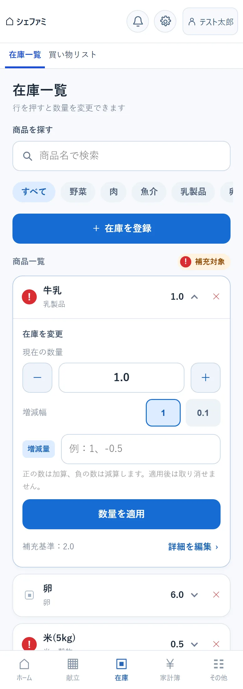

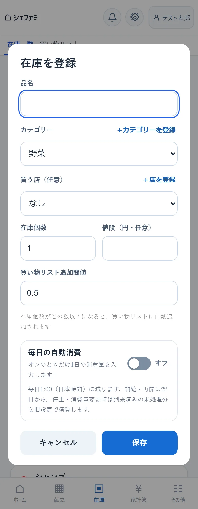
8買い物リスト
在庫の画面の上にある買い物リストタブから開きます。買う物を店ごとにまとめて表示し、買った数をそのまま在庫に足せます。
リストに入る条件
- 自動：在庫の数が「買い物リスト追加閾値」以下になった品目は、自動で入ります。
- 手動：＋ 品目を追加を押し、在庫に登録してある品目を選んで追加します。まだ十分にある物を買い足したいときに使います。
お店で使う
- 買った品目の「購入数」を−＋で合わせます。数を変えると、その行にチェックが付きます。数を変えずにチェックだけ付けることもできます。
- 買い終わったら、画面下の購入を反映を押します。
- 確認の画面で内容を確かめて確定します。
反映すると、チェックした品目の購入数が在庫に加算されます。在庫が基準を上回った品目と、手動で追加した品目は、リストから外れます。
そのほかの操作
- 並び替え：買う店順・カテゴリー順・あいうえお順から選べます。
- 検索：「商品を探す」に品名を入れます。
- 詳細：品目の行を押すと、カテゴリー・店・参考の値段・現在の在庫を確認できます。買う予定の数の保存、小数（0.5 など）での購入数の入力、リストからの削除もここで行います。

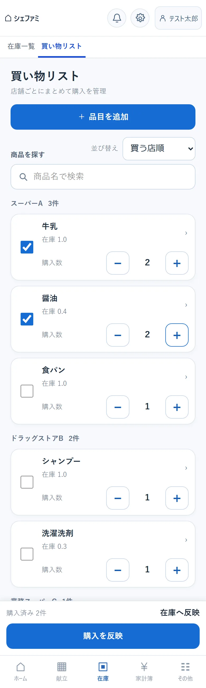
9家計簿（収入・支出）
下のメニューの家計簿から開きます。ここに表示される収入・支出の明細は、自分が登録したものだけです。ほかのメンバーの明細は表示されません。
画面の構成
| 今月の集計 | 今月の収入・支出・差額。その下に世帯合計対象額と、今月の固定費の予定額。 |
|---|---|
| イベント支出 | イベントごとの支出の合計（期間を選べます）。 |
| 未精算 | 割り勘で、これから支払う分と受け取る分。精算一覧へで割り勘の画面へ移ります。 |
| 履歴 | これまでの収入と支出。新しい順に並びます。 |
支出を登録する
- ＋ 収支を登録を押します。上の切り替えが「支出」になっていることを確かめます。
- 日時、金額、使用用途（任意）、カテゴリーを入力します。
- 支払いに使った口座やカードを「口座/カード」で選ぶと、その残高が自動で減ります（任意）。
- 必要に応じてその他の設定を開き、下の項目を設定します。
- 登録を押します。
| その他の設定 | 説明 |
|---|---|
| 世帯合計に含める | 食費や日用品など、世帯全体の支出として合計に入れたいときにチェックします。金額の合計だけが世帯で共有されます。 |
| イベント | 旅行などのイベントに関する支出のときに選びます。イベントに「デフォルト金額」があると、金額欄に自動で入ります（書き換えできます）。 |
| 割り勘する | 立て替えた支出を、ほかの人と分けるときにチェックします。詳しくは「割り勘・精算」をご覧ください。 |
| メモ | 自由に書けます（255文字まで）。 |
毎月決まって支払うものは、入力画面の下の固定費で登録 ›から固定費として登録すると、毎月の入力が要らなくなります。
収入を登録する
- ＋ 収支を登録を押し、上の切り替えで収入を選びます。
- 日時、金額、内容、カテゴリー、入金先口座を入力します。
- 登録を押します。入金先の口座の残高が自動で増えます。
履歴を探す・直す・削除する
- 種類（すべて・支出・収入）、カテゴリー、キーワード、対象の月で絞り込めます。検索・月を解除で元に戻ります。
- 行を押すと詳細が開きます。編集で内容を直し、右上のごみ箱のボタンで削除します。口座やカードを選んでいた場合は、残高も自動で調整されます。
- 割り勘の請求を始めた支出（割り勘の状態が「未請求」以外になっているもの）
- 割り勘の精算で自動的に作られた「割り勘精算」の収入・支出


10口座・カード
家計簿の画面の上にある口座・カード管理タブから開きます。登録した口座・カードと残高は、自分にだけ表示されます。
口座を登録する
- 口座・財布タブで＋ 口座を登録を押します。
- 口座名（例：「生活費口座」）、種別（銀行・電子マネー）、いまの残高を入力して登録します。
口座の行を押すと、その口座に紐づくカードと、取引履歴のボタンが表示されます。取引履歴では、入出金と、その時点の残高を確認できます。口座の削除も取引履歴の画面から行います。
カードを登録する
- カードタブで＋ カードを登録を押します。
- 紐づく口座、カード名、種別を選んで登録します。
| 種別 | 動き |
|---|---|
| クレジットカード | このカードで支出を登録すると、紐づく口座の残高から、その場で差し引かれます。 |
| チャージ型カード | カード自身が残高を持ちます。カードの行を開いて（カード名）にチャージを押し、金額を入れると、口座からカードへ残高が移ります。支出はカードの残高から差し引かれます。 |
残高が変わるとき
- 支出を登録する（口座/カードを選んだ場合）→ 減る
- 収入を登録する → 入金先の口座が増える
- 固定費が自動で計上される（引き落とし元を選んだ場合）→ 減る
- 割り勘を精算する（口座を選んだ場合）→ 支払った側は減り、受け取った側は増える

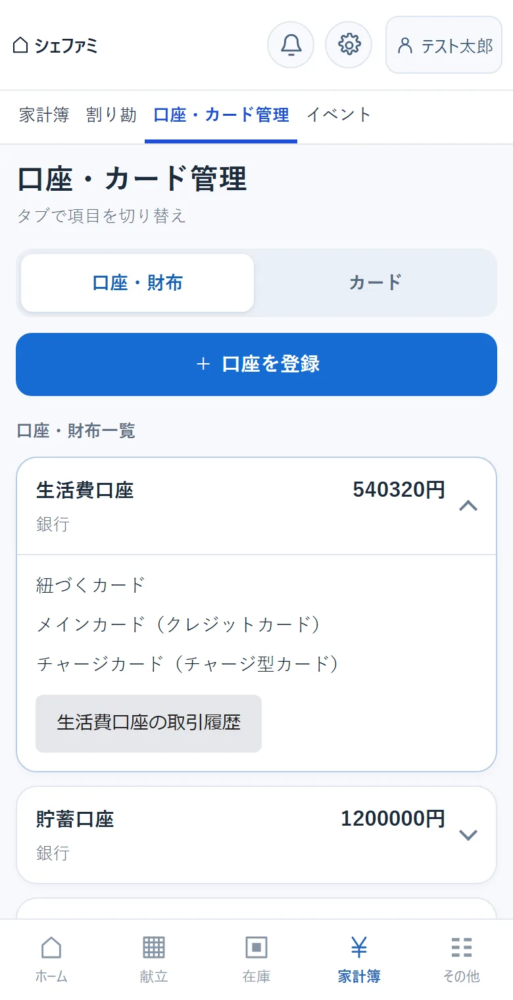

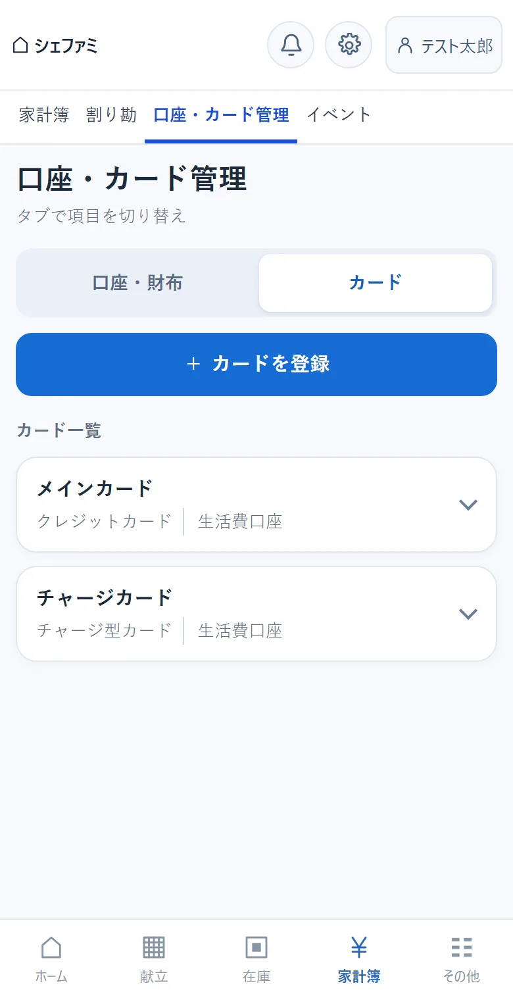
11固定費
下のメニューのその他 → 固定費から開きます。家賃・光熱費・通信費など、毎月決まって支払うものを登録します。
しくみ
- 登録した固定費は、毎月の支払日になると、家計簿の支出として自動で記録されます（毎日午前1時ごろに処理されます）。
- 支払日を31日にしていて、その月が30日までの場合などは、その月の最後の日に記録されます。
- 一覧の金額は「毎月の予定額」です。画面下の「登録額合計（参考）」は、表示中の固定費の月額を足したものです。
固定費を登録する
- ＋ 固定費を登録を押します。
- 固定費名（候補から選ぶか、自由に入力）、金額、支払日（1〜31）を入力します。
- 引き落とし元の口座・カードを選ぶと、記録のたびに残高が減ります（任意）。
- 必要に応じて詳細設定を開き、下の項目を設定します。
- 登録を押します。
| 詳細設定 | 説明 |
|---|---|
| 公開範囲 | 「世帯共有」は世帯の全員に、「個人」は自分にだけ表示されます。 |
| 世帯合計に含める | 世帯全体の支出の合計に入れるときにチェックします。 |
| 割り勘 | 毎月の記録のたびに、決めた割合や金額で割り勘の内訳を自動で作ります。 |
内容を確認する・直す・削除する
一覧の行を押すと詳細が開きます。編集と削除ができるのは、登録した本人だけです。ほかのメンバーが登録した世帯共有の固定費は、見るだけになります。引き落とし元や割り勘の内容は、登録した本人以外には「非公開」と表示されます。
- 固定費を削除しても、すでに記録された過去の支出は家計簿に残ります。
- 自動で記録された支出を家計簿で削除した場合、その月の分がもう一度記録されることはありません。
- 金額などを変更すると、変更したあとに来る支払日の記録から新しい内容になります。

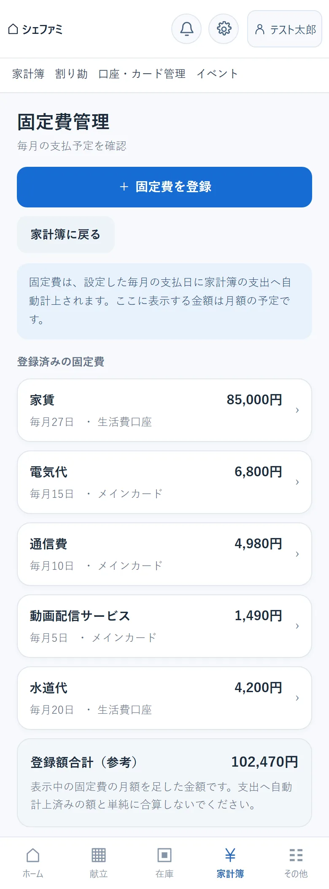

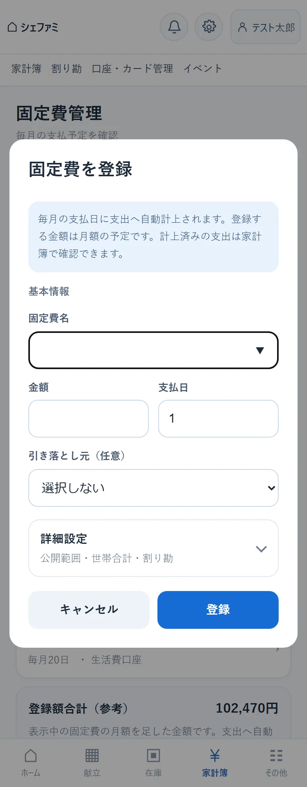
12割り勘・精算
家計簿の画面の上にある割り勘タブから開きます。自分が立て替えた支出を相手と分け、お金のやり取りが済むまでの状況を管理します。内訳が見えるのは、立て替えた人と負担する人の2人だけです。
割り勘を作る
- 支出を登録するときに、その他の設定を開いて割り勘するにチェックします。
- 入力方法を選びます。「割合」は％で、「金額」は円で、相手の負担分を入力します。
- 相手を選びます。
- 世帯内：同じ世帯のメンバーから選びます。
- 世帯外：友人など、シェファミを使っていない人の名前を入力します。
- 相手を追加で、相手を20人まで増やせます。残りが自分の負担として表示されます。
- 支出を登録すると、割り勘の一覧に内訳が作られます。
精算の流れ（相手が世帯内のメンバーのとき）
| 順番 | だれが | 押すボタン | 状態 |
|---|---|---|---|
| 1 | 立て替えた人 | 請求 | 未請求 → 請求中 |
| 2 | 負担する人 | 支払う（実際にお金を渡したあと） | → 受領確認待ち |
| 3 | 立て替えた人 | 受け取りました | → 精算済み |
- 「請求」を押さなくても、負担する人は先に「支払う」を押せます。
- 負担する人は、すぐに払えないとき保留を押して、保留中にできます。
- 「支払う」と報告されたのにまだ受け取っていないときは、立て替えた人がまだ受け取っていないを押すと、請求中に戻ります。
- コメントで、相手とメッセージをやり取りできます（500文字まで）。
相手が世帯外の人のとき
相手はシェファミを使えないので、お金を受け取ったら、立て替えた人が精算済みにするを押します。
精算すると家計簿に記録されます
「支払う」「受け取りました」「精算済みにする」を押すとき、使った口座を選べます（任意）。精算が済むと、受け取った人には収入、支払った人には支出として、「割り勘精算」というカテゴリーで家計簿に自動で記録されます。口座を選んでいた場合は、残高も増減します。
一覧の見方・削除
- 上のすべて世帯内世帯外で、相手の種類を絞り込めます。
- 「受け取り予定」「支払い予定」は、まだ精算が済んでいない分の合計です。
- 行を押すと詳細が開きます。立て替えた人は、精算前の内訳を右上のごみ箱のボタンで削除できます。
- 世帯内の相手と精算済みになった内訳は、相手の家計簿にも記録があるため削除できません。

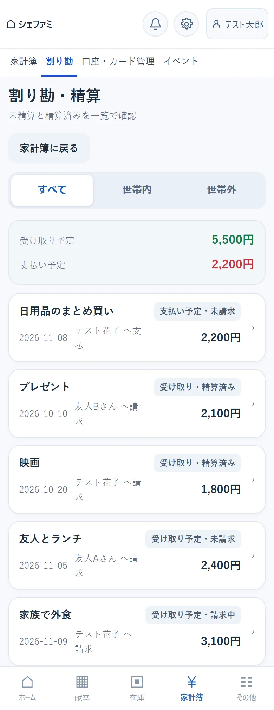

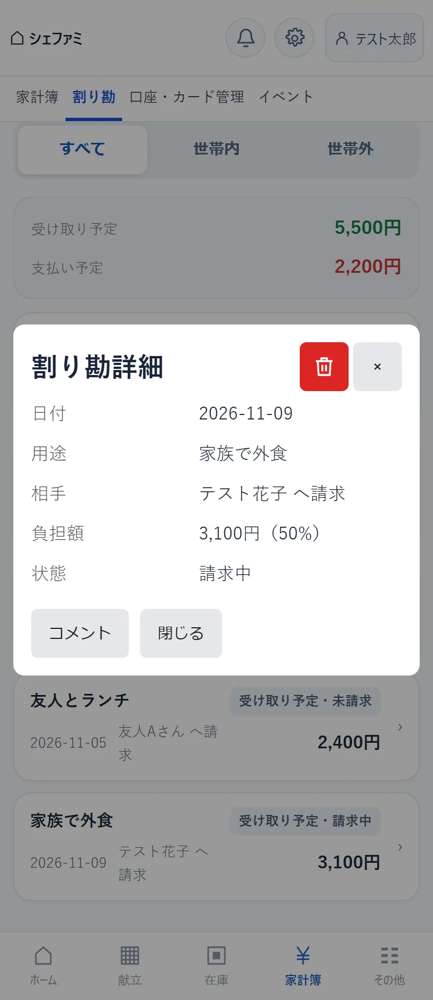
13イベント
家計簿の画面の上にあるイベントタブから開きます。予定や記念日を登録すると、ホームのカレンダーに表示されます。支出をイベントに結び付けると、「旅行でいくら使ったか」などをまとめて確認できます。
イベントを登録する
- ＋ イベントを登録を押します。
- 下の表の項目を入力します。
- 登録を押します。
| 項目 | 説明 |
|---|---|
| イベント名・日付 | 予定の名前と日付を入力します。 |
| 終日 | オフにすると、開始と終了の時刻を入力できます。 |
| 繰り返し | 単発・毎日・毎週・毎月・毎年から選びます。ごみ出しや誕生日などは繰り返しにすると便利です。 |
| 通知する | オンにすると、その予定がある日に、画面右上のベルに件数が表示されます。繰り返しのイベントだけで使えます。 |
| 公開範囲 | 「世帯共有」は世帯の全員に、「個人」は自分にだけ表示されます。 |
| その他の設定 | デフォルト金額：支出の登録でこのイベントを選ぶと、金額欄に自動で入る金額です。 サマリー表示：オンにすると、ホームと家計簿の「イベント別支出」に表示されます。 |
内容を確認する・直す
- 一覧の行を押すと、自分が登録したイベントは編集の画面が、ほかのメンバーが登録したイベントは内容の確認の画面が開きます。
- 編集ができるのは、登録した本人だけです。内容を直して更新を押します。
- イベントの画面では、そのイベントに結び付けた自分の支出の合計も確認できます。
イベントを削除する
- 一覧で、削除したいイベントの行を押して編集の画面を開きます。
- 画面の右上にあるごみ箱のボタンを押します。
- 「この操作は取り消せません」と確認が表示されるので、削除するを押します。やめるときは削除をやめるを押すと、入力中の内容を残したまま編集の画面に戻ります。
- 削除できるのは、登録した本人だけです。ほかのメンバーが登録したイベントには、ごみ箱のボタンが表示されません。
- 削除したイベントは、カレンダーと「イベント別支出」の集計から消えます。
支出をイベントに結び付ける
支出を登録するときに、その他の設定の「イベント」で選びます。集計されるのは、自分が登録した支出だけです。

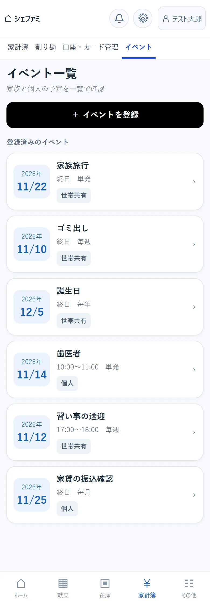

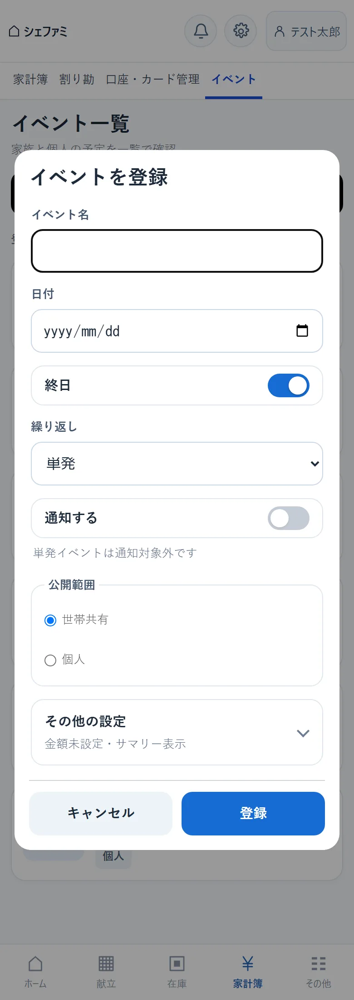
14カテゴリー管理
下のメニューのその他 → カテゴリー管理、または収支の登録画面のカテゴリー管理 ›から開きます。家計簿の支出と収入の分類を管理します。カテゴリーは世帯で共有されます。
- 支出カテゴリー収入カテゴリーで、表示する種類を切り替えます。
- 支出カテゴリーを登録（または収入カテゴリーを登録）で、独自のカテゴリーを追加できます。
- 自分たちで追加したカテゴリーは、名前の変更と削除ができます。
- 種別が「デフォルト」のカテゴリー（食費・日用品など、最初からあるもの）は、変更も削除もできません。
- すでに収入・支出で使っているカテゴリーは削除できません。
在庫のカテゴリーと買う店は、在庫の登録画面の＋カテゴリーを登録＋店を登録から追加します。

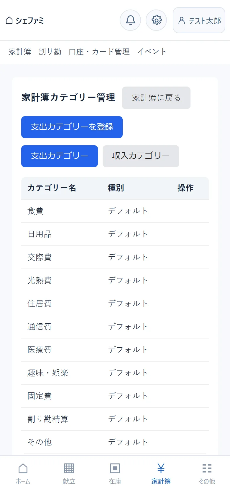
15設定
画面右上の歯車のボタンから開きます。「世帯設定」「表示設定」「アカウント設定」の3つがあります。
| 世帯設定 | 世帯グループの名前・招待コード・メンバーの確認と、世帯グループからの退出 |
|---|---|
| 表示設定 | ホームに表示するカードと項目、並び順の変更 |
| アカウント設定 | 表示名・パスワード・メールアドレスの変更と、退会 |

15-1. 世帯設定
- 世帯グループ名、招待コード、メンバーの一覧を確認できます。
- コピーを押すと、招待コードをコピーできます。家族を招待するときに、メッセージなどに貼り付けて伝えてください。
世帯グループから退出する
世帯グループから退出するを押し、確認の画面で退出するを押します。
- 退出すると、その世帯グループの共有データ（在庫・買い物リスト・レシピなど）を見られなくなります。
- 自分が最後の1人の場合、世帯グループと共有データはすべて削除され、元に戻せません。

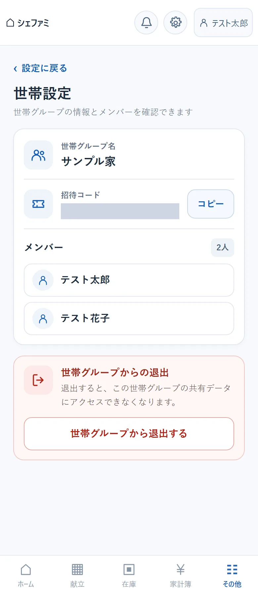
15-2. 表示設定
ホームの見え方を、自分用に変えられます。ほかのメンバーの画面には影響しません。
- カードごとのスイッチで、ホームに表示するかどうかを切り替えます。
- カードの中の項目（例：「買い物リスト」「在庫リスト」）も、チェックで個別に切り替えます。
- 「カードの並び順」で、上下の矢印を押すかドラッグして、順番を入れ替えます。
- 最後に保存を押します。保存するとホームに戻り、変更が反映されます。

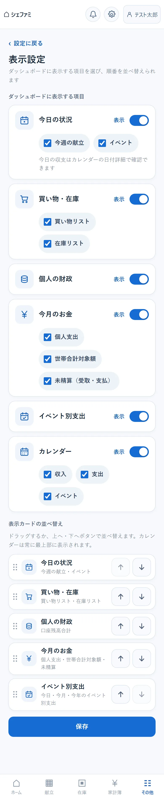
15-3. アカウント設定
画面の上のボタン（表示名・パスワード・メール・退会）を押すと、その項目へ移動します。
- 表示名を変える
- 新しい表示名を入力して保存を押します。
- パスワードを変える
- 現在のパスワードと新しいパスワード（確認を含む）を入力します。変更すると、ほかの端末でログインしていた場合は、そちらがログアウトされます。
- メールアドレスを変える
- 現在のパスワードと新しいメールアドレスを入力します。変更後は、新しいメールアドレスでログインします。
退会する
- 「退会」の欄で現在のパスワードを入力し、退会を申し込むを押します。
- 確認の画面で退会するを押します。
- 申し込むとすぐにログアウトされ、30日後にアカウントと自分のデータ（収支・口座など）が削除されます。
- 30日以内であれば、同じメールアドレスとパスワードでログインすると、退会を取り消せます。
- 30日を過ぎると元に戻せません。
- 精算が済んでいない割り勘や、ほかの人が負担する設定の固定費が残っていると、退会を申し込めません。先に精算や固定費の整理を済ませてください。

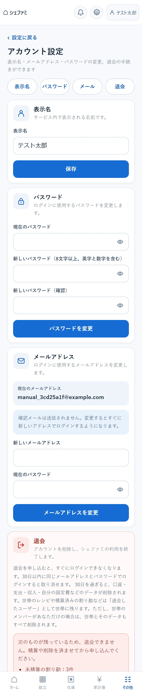
16困ったときは
パスワードを忘れました
- ログイン画面のパスワードを忘れた場合を押します。
- 登録したメールアドレスを入力して送信します。
- 届いたメールのリンクを開き、新しいパスワードを設定します。リンクが使えるのは30分間です。
画面に「現在、パスワード再設定メールを利用できません」と表示される間は、この手続きは使えません。ログインできている端末があれば、アカウント設定からパスワードを変更できます。
メールが届かないときは、迷惑メールのフォルダと、入力したメールアドレスを確かめてください。続けて何度も申請すると、しばらく受け付けられなくなります。
「試行回数が多すぎます」と表示されます
安全のため、短い時間に何度もログインやパスワードの入力をくり返すと、一時的に受け付けなくなります。15分ほど待ってから、もう一度お試しください。新規登録を続けて行った場合は、1時間ほど待つ必要があります。
待っている間は、正しいパスワードを入力してもログインできません。パスワードを思い出せないときは、「パスワードを忘れました」の手続きをご利用ください。
画面が古いまま・表示がおかしい
ページを再読み込みしてください。ホーム画面に追加して使っている場合は、いったん閉じて開き直します。それでも直らないときは、ログアウトしてからログインし直してください。
収入を登録できません
収入の登録には、入金先の口座が必要です。先に口座を登録してください。
ほかの家族の支出や口座が見えません
収入・支出の明細と口座の残高は、登録した本人にだけ表示されるしくみです。世帯全体の金額を把握したい支出は、登録のときに「世帯合計に含める」にチェックしてください。合計だけが共有されます。
買い物リストに品目が入りません／消えません
- 入らない：在庫の数が「買い物リスト追加閾値」を上回っていると、自動では入りません。＋ 品目を追加で手動で追加できます。
- 消えない：「購入を反映」をしても、在庫が基準以下のままの品目はリストに残ります。購入数を見直すか、在庫の基準を下げてください。
先週の献立が消えています
献立表は、過ぎた週の分を自動で削除するしくみです。レシピそのものはレシピ一覧に残っています。
支出を編集・削除できません
割り勘の請求を始めた支出（割り勘の状態が「未請求」以外のもの）と、割り勘の精算で自動的に作られた「割り勘精算」の明細は、編集・削除できません。
固定費が記録されません
- 記録されるのは、支払日の午前1時ごろです。支払日より前には記録されません。
- 記録されるのは、登録したあとに来る支払日の分からです。過去の月の分は、さかのぼって記録されません。必要な場合は、支出として手で登録してください。
- その月の分を家計簿で削除した場合は、同じ月にもう一度記録されることはありません。
WEBのレシピを登録できません
ページによっては、タイトルを取り込めないことがあります（ログインが必要なページ、アプリ専用のページなど）。その場合は「手動」タブでタイトルを入力し、手順の欄にURLを書いておく方法があります。同じURLがすでに登録されている場合も、登録できません。
間違えて退会を申し込みました
申し込みから30日以内であれば、同じメールアドレスとパスワードでログインすると、退会を取り消す案内が表示されます。
別の世帯グループに移りたい
いまの世帯グループを退出してから、新しい世帯グループを作るか、招待コードで参加します。自分が最後の1人の場合、元の世帯グループの共有データは削除されるのでご注意ください。
17データの扱いについて
- 登録した内容はインターネット上のサーバーに保存され、どの端末からログインしても同じ内容が表示されます。
- パスワードは、元の文字が分からない形に変換して保存しています。
- 手書きレシピの写真は、文字を読み取るためだけに使い、読み取りが終わると削除します。
- WEBのレシピを登録すると、タイトルと画像を取り込むために、シェファミがそのページへ一度アクセスします。
- 一部の表示の状態（ホームのカードの折りたたみ、前回選んだ口座、買い物リストのチェック）は、お使いの端末の中にだけ保存されます。別の端末には引き継がれません。
- 共用の端末で使ったあとは、必ずログアウトしてください。
- パスワードはほかのサービスと別のものにし、家族にも教えないでください。家族はそれぞれ自分のアカウントを登録します。
- 招待コードは、世帯に入ってほしい人にだけ伝えてください。
- 銀行の暗証番号やカード番号などは、メモ欄にも入力しないでください。